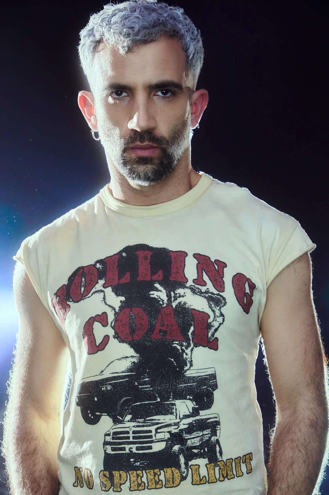
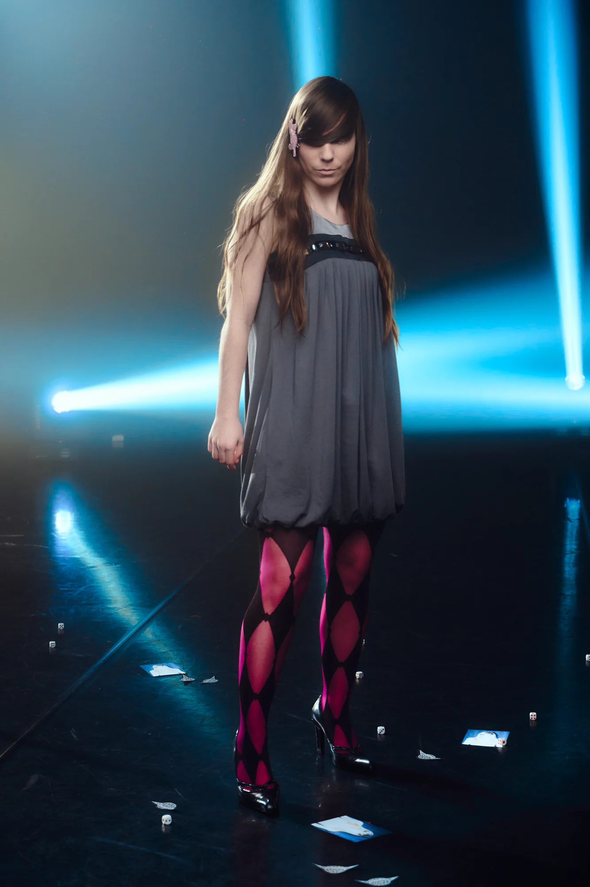
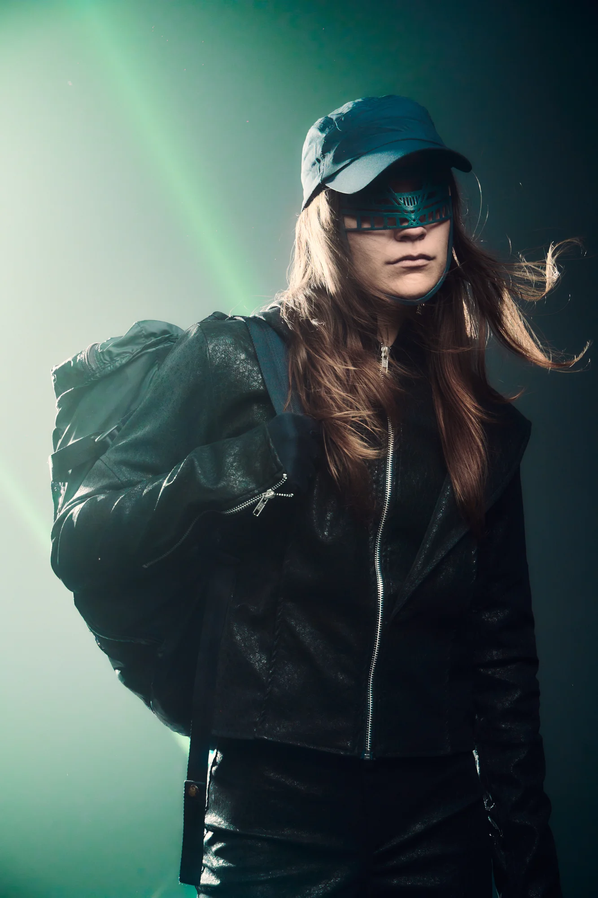
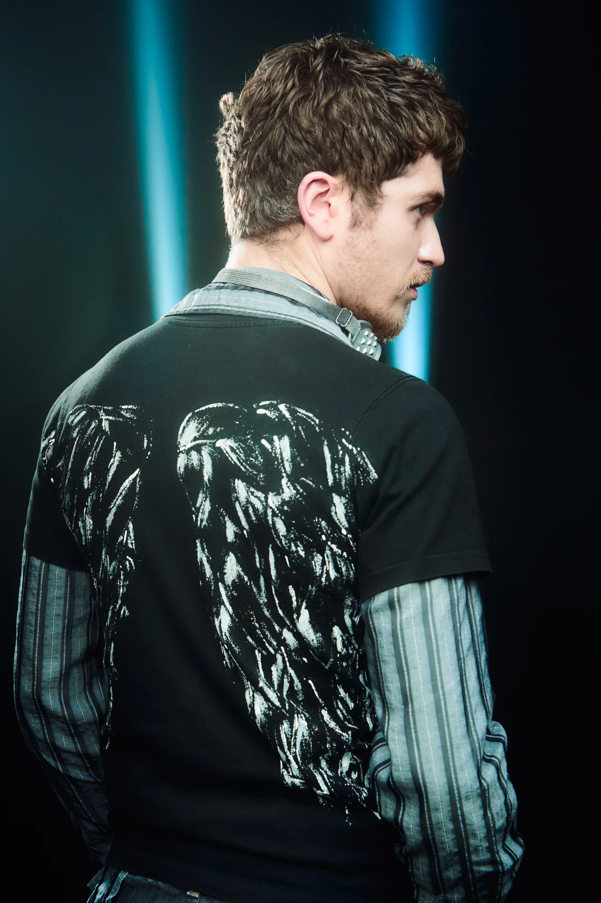
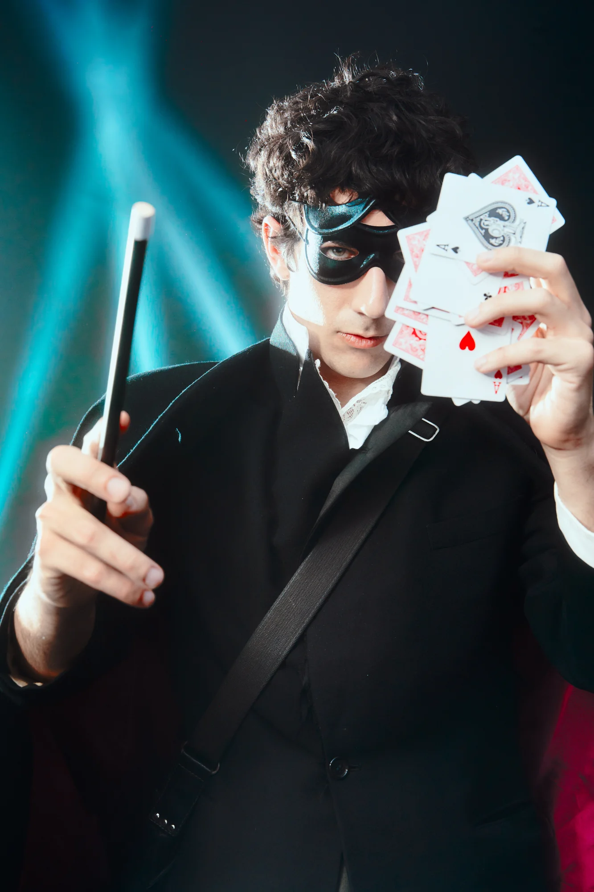

EVERAFTER (2026)
pieza escénica
En el régimen del realismo capitalista, la megacorporación WKW III lanza su proyecto piloto más ambicioso: EVERAFTER. Es una demo de hiperrealidad playbour diseñada para extraer rentabilidad de la promesa de autorrealización ilimitada. En esta demo viven sus siete primeros metahabirtantes: Fifth Lad, Violet Fox, The Kasper, BackPack X, Sean Coby, Hairy Oxter y Wilta Wound Wank; que esperan constantemente que el proyecto se haga realidad, y quedan reducidos a la condición de becarios perpetuos en una suspensión performativa del potencial. El público accede a este multiverso como un inversor que participa en una experiencia de turista voyeur, observando de cerca la realidad de este mundo en construcción.
Una coproducción del Grec 2026 Festival de Barcelona, el Antic Teatre, Graner, El Canal de Salt y el Mercat de les Flors. Con el apoyo de la Briqueterie (París), Graner (Barcelona), Centro Cívico Drassanes (Barcelona), Canal de Salt (Salt), LAV (Tenerife) y Fabra i Coats (Barcelona). Con colaboración de la Generalitat de Catalunya y el Institut Ramon Llull.
Esta obra ha recibido una beca de creación artística, investigación e innovación de la Generalitat de Catalunya
- Autoría
- laSADCUM
- Dirección y coreografía
- Guillem Jiménez
- Asistencia de coreografía
- Marina Fueyo
- Interpretación
- Judit Amengual, Laia Camps, Mei-Li Dong, Martí Forcada, Guillem Jiménez, Johann Pérez, Sau-Ching Wong
- Dramaturgia
- YesSi Perse, Roberto Fratini
- Composición musical
- Alejandro Da Rocha, Guillem Jiménez
- Vestuario
- Tes Rosmeri
- Escenografía
- Guillem Jiménez
- Iluminación
- Oscila
- Diseño gráfico
- Ahmad Hammoud
- Fotografía
- Alan Gomis
- Vídeo
- MerciXula
- Mirada externa
- Vera Palomino, Javi Valls, Juan Galo
- Producción
- Lila Brick (Muntsa Roca y Tina Martí) y Blanca Sartorius
- ▸ Promotional trailer
- ▸ SneakPeek Trailer 1
- ▸ SneakPeek Trailer 2
- ▸ SneakPeek Trailer 3
- ▸ SneakPeek Trailer 4
Para ver la pieza completa, póngase en contacto.
Fotos: Alan Gomi







